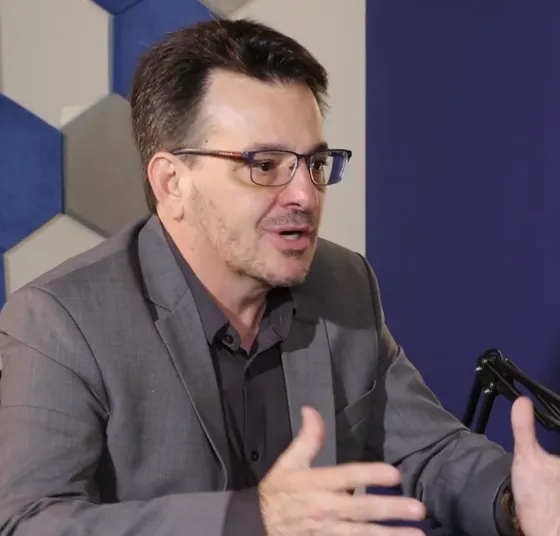

- Salário pago para quem ainda não está pronto.
- Instrutor viajando de loja em loja.
- Loja esperando o novato aprender.
O seu repositor. O seu vigilante. A sua atendente de loja. Eles não têm computador.
Passa o dia entre o estoque e a gôndola.
Faz a ronda e cuida do posto, de dia e de noite.
Atende no balcão, olhando para o cliente, não para uma tela.
E toda semana chega gente nova para treinar.
Integração lenta custa caro.
Enquanto o novato não aprende, a conta corre. E ela aparece em três lugares.

“Muitos deles não têm uma estação de trabalho. Eles trabalham andando.”
Com a Plataforma de Treinamento Vivo Empresas, o treinamento vai para o celular.
- Trilha pronta para cada cargo
- Funciona até sem internet
- Entra sem e-mail

“Hoje, quando entra um colaborador, ele acessa a plataforma e já tem a trilha de formação inicial.”
E isso já dá resultado.
Integração de 9 dias para 3.
Uma rede de atacarejo, com dezenas de lojas e 19 mil colaboradores, cortou 67% do tempo que o novato levava para começar.
Onboarding de 5 meses para 1 mês.
Uma empresa de segurança, com vigilantes em mais de 10 países e sem computador no posto, encurtou o onboarding e gastou 80% menos com treinamento.
Franqueados formados em 30 dias.
Uma rede de alimentação, com mais de 400 lojas, formava franqueados em 3 meses. Hoje, em 30 dias.

“Coloquei hoje de manhã. À tarde, todo mundo já está sabendo.”
Menos tempo de integração é menos dinheiro parado.
Treine quem não tem computador, no celular que já está no bolso.
Faça o diagnóstico da sua operação